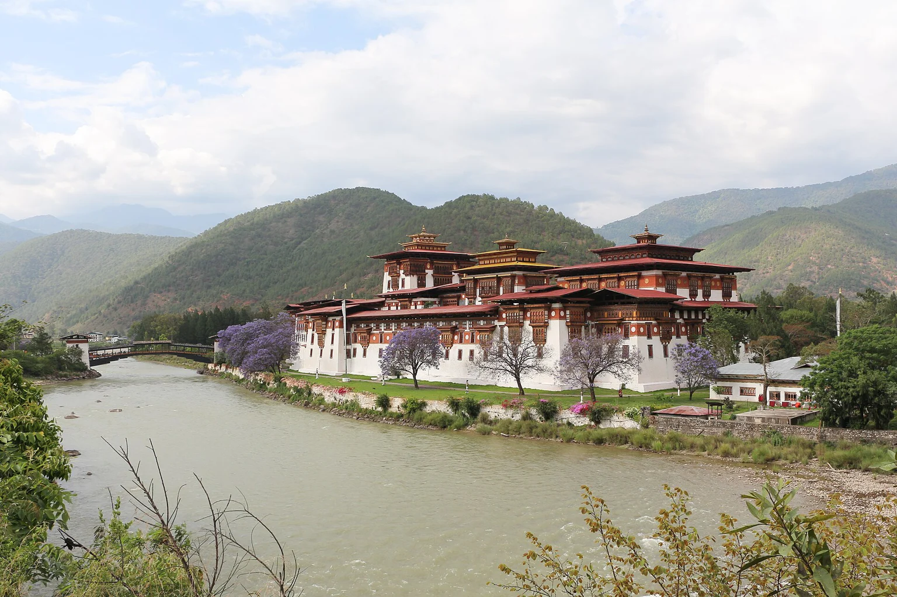

Western Bhutan
Paro
Pine forest and valley walks make Paro a natural beginning or ending to the route.
Western Bhutan
Five Amankora lodges make a route through Bhutan, each with its own landscape and reason to pause.
Your preferences. Thoughtful options. Personal attention throughout.

Western Bhutan
Pine forest and valley walks make Paro a natural beginning or ending to the route.
Western Bhutan
A wooded Motithang base connects the capital’s cultural life with quieter surroundings.
Western Bhutan
A suspension-bridge arrival, orchards and rice fields give the warmer valley a different rhythm.
Central Bhutan
A broad high valley and the monastery outlook favour walking and time to notice the landscape.
Central Bhutan
Use the eastern lodge for a longer cultural route, rather than adding it as a hurried detour.
A few considered examples. Your personal selection extends beyond these pages, with stays and privileges chosen around your preferences.
Paro Valley, Paro District, Bhutan
Pine-forest suites make a quiet Paro base for a cultural introduction and a carefully paced Tiger’s Nest outing.
Who it suits
Culturally curious travellers planning a guided journey at their own pace.
Begin among the pines, with a proper breakfast before deciding how ambitious the day should be. A guided cultural visit can ease you into the valley; the Tiger’s Nest hike deserves its own plan, an early start and a pace that suits your fitness. Back at the lodge, the spa and the quiet of the forest offer a different afternoon. Keep the final evening local if a flight follows. Another valley can come next, but it should have time of its own.
Getting there & getting around
Guided road routing between valleys; flights and entry arrangements require advance planning.
Before choosing
Confirm Bhutan entry requirements, regional transfers and the lodge-specific programme. Altitude, walking and weather affect the route.
A different choice
Compare the individual Amankora valley lodges; they are separate bases with different landscapes and journeys.
Details checked · 26 Oct 2026
Motithang, Thimphu Valley, Bhutan
A forested position above the capital pairs city culture with the quieter rhythm of a small lodge.
Who it suits
Culturally curious travellers planning a guided journey at their own pace.
Spend the morning in the capital with a guide, choosing craft, architecture or a cultural stop rather than trying to see everything at once. Lunch can stay in town before the road returns you to Motithang and the forest. The lodge’s quieter setting makes that return part of the pleasure. Leave the evening for a considered dinner and a conversation about the next valley. Paro and Punakha tell different stories, so a Thimphu stay works best when it has a clear purpose within the route.
Getting there & getting around
Guided road routing between valleys; flights and entry arrangements require advance planning.
Before choosing
Confirm Bhutan entry requirements, regional transfers and the lodge-specific programme. Altitude, walking and weather affect the route.
A different choice
Compare the individual Amankora valley lodges; they are separate bases with different landscapes and journeys.
Details checked · 26 Oct 2026
Punakha Valley, Bhutan
A riverside valley setting reached across a suspension bridge changes the mood from Bhutan’s higher forest lodges.
Who it suits
Culturally curious travellers planning a guided journey at their own pace.
Cross the suspension bridge and let the pace change with the valley. A morning visit to Punakha Dzong can lead into a gentler afternoon among the surrounding fields and orchards, with the route shaped around the season. Return to the lodge before dinner rather than treating Punakha as a rushed excursion from the capital. The farmhouse setting and the softer landscape give this chapter a character of its own. A stay here can balance the cultural intensity and higher elevations elsewhere on the journey.
Getting there & getting around
Guided road routing between valleys; flights and entry arrangements require advance planning.
Before choosing
Confirm Bhutan entry requirements, regional transfers and the lodge-specific programme. Altitude, walking and weather affect the route.
A different choice
Compare the individual Amankora valley lodges; they are separate bases with different landscapes and journeys.
Details checked · 26 Oct 2026
Phobjikha Valley, Wangdue Phodrang District, Bhutan
A small lodge overlooking Gangtey Goemba makes the open Phobjikha Valley the reason to pause.
Who it suits
Culturally curious travellers planning a guided journey at their own pace.
Look towards the monastery before breakfast, then take the morning at walking pace. A guide can help connect the valley’s landscape with the community and its religious life, choosing a route that fits the weather and your energy. There is no need to fill the afternoon with a long road journey if the lodge is your base for several nights. Read, rest or step outside again as the light changes. Any wildlife interest should follow its real season rather than becoming an assumed part of the stay.
Getting there & getting around
Guided road routing between valleys; flights and entry arrangements require advance planning.
Before choosing
Confirm Bhutan entry requirements, regional transfers and the lodge-specific programme. Altitude, walking and weather affect the route.
A different choice
Compare the individual Amankora valley lodges; they are separate bases with different landscapes and journeys.
Details checked · 26 Oct 2026
Jakar, Bumthang Valley, Bhutan
A lodge beside Wangdichholing Palace gives central Bhutan’s temples and cultural landscapes their own chapter.
Who it suits
Culturally curious travellers planning a guided journey at their own pace.
Begin with the palace setting close by, then let a local guide choose a manageable sequence of temples and village stops. Bumthang rewards attention rather than a long checklist: leave time to sit, to ask questions and to return to places that catch your interest. Lunch can punctuate the day before an unhurried return to the lodge. The onward journey needs its own travel day and a realistic route. Choose this valley because you want that deeper chapter, rather than adding it solely to complete a circuit.
Getting there & getting around
Guided road routing between valleys; flights and entry arrangements require advance planning.
Before choosing
Confirm Bhutan entry requirements, regional transfers and the lodge-specific programme. Altitude, walking and weather affect the route.
A different choice
Compare the individual Amankora valley lodges; they are separate bases with different landscapes and journeys.
Details checked · 26 Oct 2026
| Property / setting | Style / suggested fit | Main reason to choose it | Accommodation | Facilities | Access / transport | Season / practical considerations |
|---|---|---|---|---|---|---|
| Amankora Paro Paro Valley, Paro District, Bhutan | Small valley lodge | Pine-forest suites make a quiet Paro base for a cultural introduction and a carefully paced Tiger’s Nest outing. | Twenty-four suites occupy the Paro lodge. | A two-storey spa and a glass-walled yoga studio belong to this specific property. | Guided road routing between valleys; flights and entry arrangements require advance planning. | Confirm Bhutan entry requirements, regional transfers and the lodge-specific programme. Altitude, walking and weather affect the route. |
| Amankora Thimphu Motithang, Thimphu Valley, Bhutan | Small valley lodge | A forested position above the capital pairs city culture with the quieter rhythm of a small lodge. | Sixteen suites form the Thimphu lodge. | Sixteen suites form the Thimphu lodge. | Guided road routing between valleys; flights and entry arrangements require advance planning. | Confirm Bhutan entry requirements, regional transfers and the lodge-specific programme. Altitude, walking and weather affect the route. |
| Amankora Punakha Punakha Valley, Bhutan | Small valley lodge | A riverside valley setting reached across a suspension bridge changes the mood from Bhutan’s higher forest lodges. | Rooms and suites; the layout and outlook are confirmed for the chosen category. | The approach includes a suspension-bridge crossing. | Guided road routing between valleys; flights and entry arrangements require advance planning. | Confirm Bhutan entry requirements, regional transfers and the lodge-specific programme. Altitude, walking and weather affect the route. |
| Amankora Gangtey Phobjikha Valley, Wangdue Phodrang District, Bhutan | Small valley lodge | A small lodge overlooking Gangtey Goemba makes the open Phobjikha Valley the reason to pause. | Eight suites keep the lodge intimate. | Eight suites keep the lodge intimate. | Guided road routing between valleys; flights and entry arrangements require advance planning. | Confirm Bhutan entry requirements, regional transfers and the lodge-specific programme. Altitude, walking and weather affect the route. |
| Amankora Bumthang Jakar, Bumthang Valley, Bhutan | Small valley lodge | A lodge beside Wangdichholing Palace gives central Bhutan’s temples and cultural landscapes their own chapter. | Sixteen suites form the Bumthang lodge. | Sixteen suites form the Bumthang lodge. | Guided road routing between valleys; flights and entry arrangements require advance planning. | Confirm Bhutan entry requirements, regional transfers and the lodge-specific programme. Altitude, walking and weather affect the route. |
Browse Hotels & Private Stays ↗ · Private villas & group stays ↗
A selection to inspire your next evening. In every destination, we shape a shortlist around you, with further tables, experiences and privileges shared personally with our clients. Tell us your taste; your time is ours to look after.
Tell us the cuisine and atmosphere you enjoy. We can develop a dining shortlist around your chosen base and dates.
Explore by cuisine & occasion ↗
One reservation or every evening of your stay. A wider world of possibilities, shared personally and arranged around you.
Tell us when you will be here. We will share occasions and experiences to shape your time around.
Browse Events & Experiences ↗Treat the road between valleys as part of the journey. Leave each lodge after breakfast with a realistic route and a few chosen stops, then reach the next before the day becomes only a transfer.
A walk, a monastery visit and a quiet evening can carry more than a crowded list. The number of valleys should follow your time, pace and comfort with altitude.
Our attention continues beyond the reservation. Contact us 24/7 during your stay, including for a change of plan or a spontaneous idea. We explore suitable options and confirm the arrangements you choose.
Tell us which place or property appeals. Approximate dates and an idea are enough to begin.
Begin an EnquiryContact us 24/7. Our team will respond personally; email info@zelrocprive.com whenever it suits you.
A little inspiration—or something already in mind?